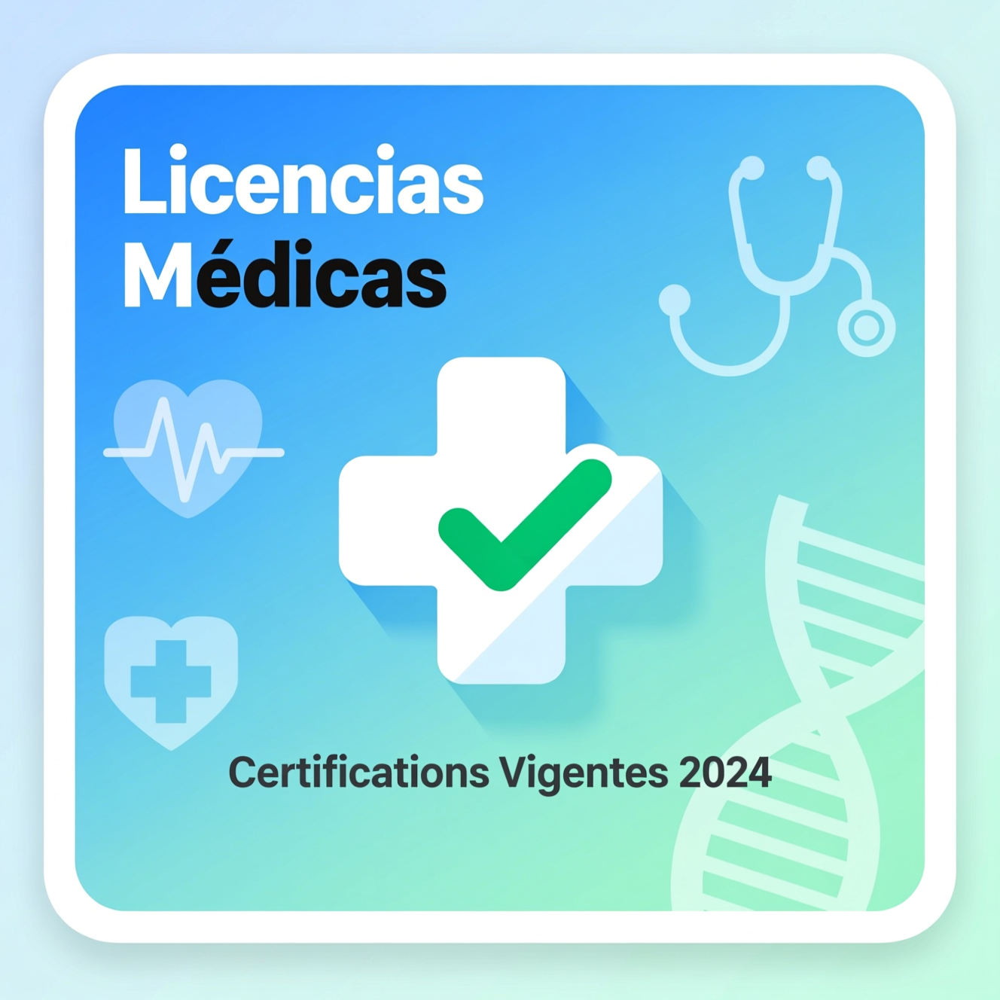

Certificaciones Médicas
Encuentra los procedimientos y formularios para la presentación de certificados médicos.
Ver video
Formularios Docentes
Accede a los distintos formularios administrativos disponibles para docentes.
Ver más
Inasistencias Docentes
Consulta y gestiona tus inasistencias de forma transparente y actualizada.
Tutorial
Organigrama Institucional
Conoce la estructura institucional y los roles de gestión del INET.
Ver video
Convocatoria a Elección de Horas
Infórmate sobre los llamados vigentes para elección de horas docentes.
Más informaciónResoluciones
Consulta las resoluciones y disposiciones administrativas vigentes para docentes.
Ver resoluciones